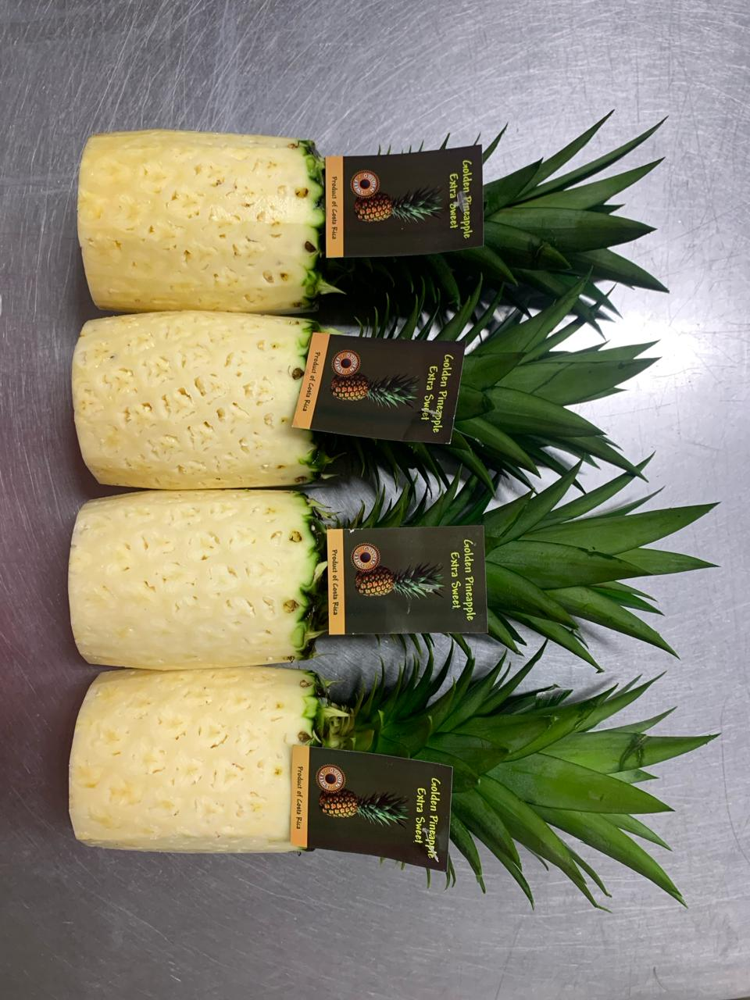

L'ananas, con il suo gusto dolce e succoso, ha conquistato il cuore dei consumatori di tutto il mondo, diventando un frutto molto apprezzato e ricercato sul mercato globale. Questo frutto tropicale, ricco di vitamine, minerali e antiossidanti, non è solo delizioso, ma offre anche numerosi benefici per la salute, tra cui una migliore digestione e un sistema immunitario potenziato.
Sul mercato, l'ananas si distingue per il suo fascino visivo e la sua versatilità culinaria. Utilizzati in piatti dolci e salati, bevande e dessert, gli ananas sono un ingrediente indispensabile in molte cucine. Inoltre, la loro capacità di conservarsi bene durante il trasporto e lo stoccaggio li rende una scelta popolare sia nei supermercati che nei mercati locali.
La domanda di ananas è in costante crescita, spinta dalla tendenza a mangiare in modo più sano e dalla preferenza per i prodotti freschi e naturali. I consumatori apprezzano la freschezza e la qualità degli ananas, il che ha portato i produttori ad adottare pratiche agricole sostenibili e responsabili per soddisfare queste aspettative.
Il mercato ha visto anche un aumento dell'offerta di ananas biologici, in linea con la crescente consapevolezza della salute e dell'ambiente. Questi ananas biologici, coltivati senza l'uso di pesticidi e fertilizzanti chimici, attraggono i consumatori attenti alla sostenibilità e alla qualità del cibo che mangiano.
In breve, gli ananas mantengono una forte posizione sul mercato grazie al loro gusto squisito, al valore nutrizionale e alla loro versatilità. Poiché i consumatori continuano a cercare scelte alimentari sane e sostenibili, la popolarità dell'ananas continua a crescere, assicurandosi un posto di rilievo nella dieta delle persone di tutto il mondo.
